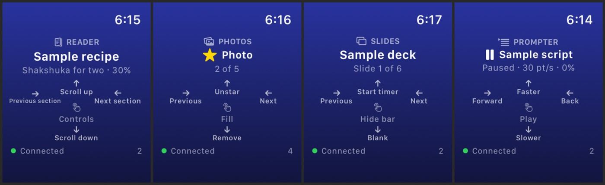
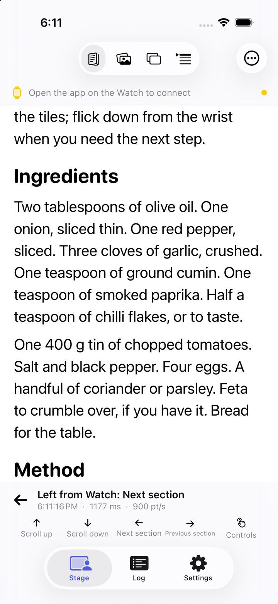
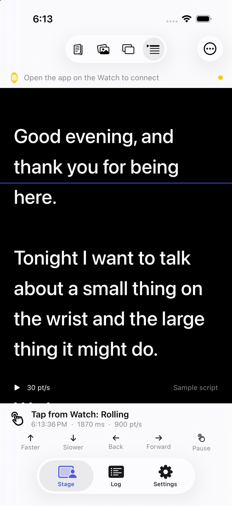

Picture someone standing somewhere. Their phone is propped in front of them, or an iPad, or they have a headset on. How do they interact with it without it looking like anything?
That was the first question, and it is older than this project. I had it back when I was thinking about hardware: some little hard square of a device, something you could hold in a pocket with a hand that looks like it is just resting there. Small gestures, nothing that reads as tapping the air or touching everything in the room. Not obvious that you have glasses on. Not obvious that you are doing anything at all.
I imagined building that device myself. Then I switched to building for iOS, looked at the Watch properly for the first time, and realised the thing I wanted to make was already on my wrist.
The reason I was suddenly building iOS at all: I got a new MacBook. I love my PC, I love that it runs Unity and everything I need for VR, and I will keep going back to it. But having Xcode and an M5 chip, and moving with AI alongside me the way I learned to at CMU, means an idea can be a running app before I have finished deciding whether it is worth pursuing. I build to find out. Some nights I do not sleep because there is too much I could make. This project came out of one of those nights.
Use what people already carry
There is a version of this idea that involves designing a new object. I did not want that one. I come from somewhere where resources were finite and you made things with what you had, and that instinct has never left. It is why the Vision Pro haptics project used a Watch that was already on the wrist instead of a new peripheral, and it is why this one does too.
Apple's ecosystem is the other half of the argument. Whatever else you think about the company, the devices talk to each other well. So instead of a new thing, the question becomes: what can the existing things do together that none of them was sold for?
I had just got a new Watch. I remember seeing it without the straps, and it was exactly the puck I had been imagining. Bright screen, a haptic engine, a radio link. Everything the hypothetical device needed, already manufactured, already paired.
Hands in your pockets, a flick of the thumb, and the screen across the room does the thing.
Subtle is the point
Voice is having a moment. Hey Siri, audio assistants, the whole rise of talking to your devices. That is genuinely great, and there are a lot of situations where I do not want to talk to anything. On a train. In a meeting. Standing in a kitchen with a recipe propped up and my hands covered in something. Next to a sleeping person.
Your eyes are already on the screen. You already know exactly what you want it to do. The gap is only in how you tell it. A flick in your pocket closes that gap without a sound, without a raised hand, without anyone else in the room being able to tell it happened.
A watch is also a thing
This is the part I found most interesting, and it is a little embarrassing that it took me this long. To build it I had to take my eyes off the Watch as a watch. Yes, it tells the time. Yes, it counts steps. But it is also just a device. A thing. A very small touch surface that happens to be worn.
It is like the ice cream bowl you use for everything except ice cream. Nobody designed it for cereal, keys, or the hair ties by the sink. It works anyway, because a bowl is a bowl before it is an ice cream bowl.
A while ago I saw the Boston Dynamics robots moving in ways no human moves. Walking backwards at speed, folding, rolling. There is a version of robotics that only wants to recreate how we walk, and I understand it, but why would a machine be limited to us? Why not go past what our bodies happen to do? I keep thinking about that when I look at a Watch and only see a watch. The object is allowed to go past what it was made for.
What Apple left on the table
Before building I went looking for who had done this. Apple ships almost exactly this gesture grammar already: the Watch can be a remote for Apple TV, it can drive Keynote, and the keyboard on the phone has had swipe for years. Watch gestures reach the iPhone in one more place, inside the VoiceOver accessibility path.
And that is the whole list. There is no general purpose Watch swipe surface for the phone, and there is no public API that would let a third party build one outside of its own app. I do not know why. Maybe the devices are meant to stay separate as a matter of principle. Maybe it is coming and I will feel silly. I looked, I did not find much, so I am building it.
That constraint shapes what this can be right now. A third party app cannot control the system interface, so what I can build is a prototype of what it would feel like, inside an app that owns its own content. Which is fine. A prototype that is honest about being one is how you find out whether the idea deserves the rest.
The other constraint is dumber: I am close to the limit on how many apps one developer account can have installed at a time. This is not a limit designed for someone who wants to pop out a project every other day.
What it is so far
The phone app has four modes, and each one decides what the five gestures mean while it is showing. The Watch pad labels its own edges with the current mode's meanings, so a flick always says what it will do before you make it.

On the Watch, the whole screen is the pad. Drags are classified by their dominant axis, diagonals and brushes are ignored, and a short fast flick counts on its predicted travel. Each direction has its own haptic. The Digital Crown scrolls the reader, steps slides, scrubs video and nudges the prompter. On newer Watches the pinch gesture, Double Tap, triggers select, so a flick and a select never need the other hand. Flicks made while the phone is out of reach are queued and delivered on the next connection.
Every flick is logged on the phone with its direction, speed and one way latency, so the link itself can be measured rather than trusted. I want to know what the delay feels like before I have opinions about it.


Is this one thread?
People will notice the sequence. Haptic gloves in undergrad. Wrist haptics for Vision Pro. Now the wrist as the input. I do not honestly experience those as one deliberate thread. What I do see is a connection in what I keep reaching for: haptics, the interactions that are already available on a body, lightweight wearables, things that make life easier without announcing themselves.
Some of this is just where my head is. I have just finished a masters in human computer interaction, and interfaces and interactions are the top of my mind whether I want them there or not. There is no machine learning in this project. It is still an idea worth chasing, and I have stopped needing every idea to have a model in it.
The roadmap after the phone is Apple TV, then Vision Pro. Since the Watch to phone link is iOS and watchOS only, whether those need the phone as a bridge or a direct path is itself one of the questions, and I would rather find out by building it than by reading about it.
I cannot wait to test it standing up, hands in my pockets, with something on the other side of the room.